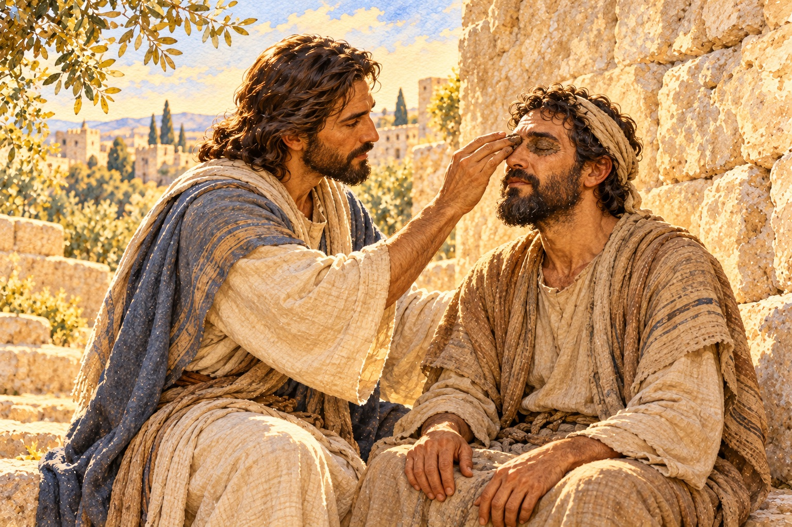
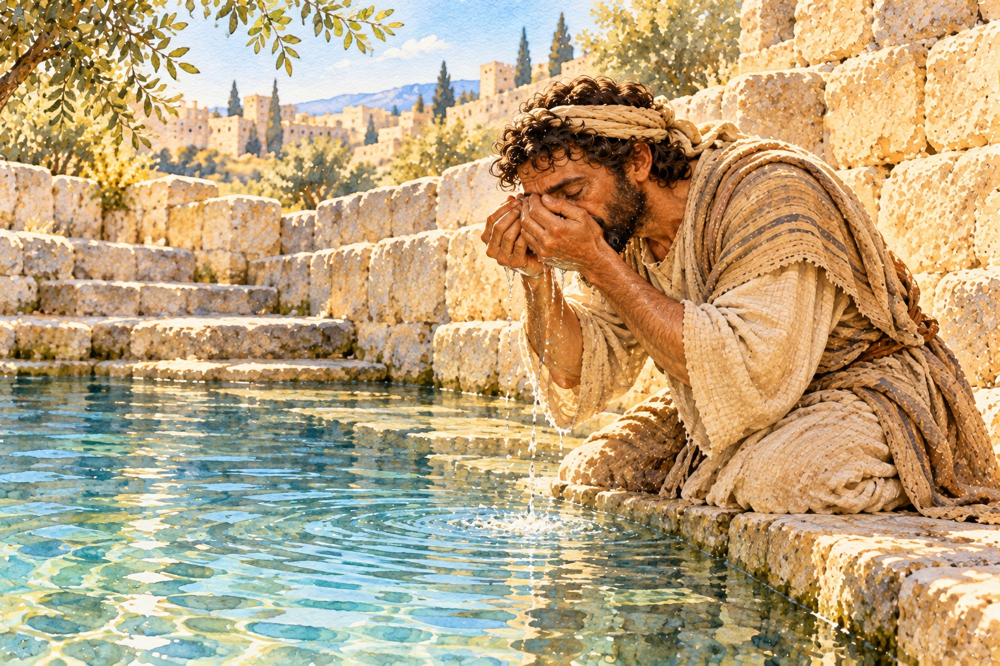
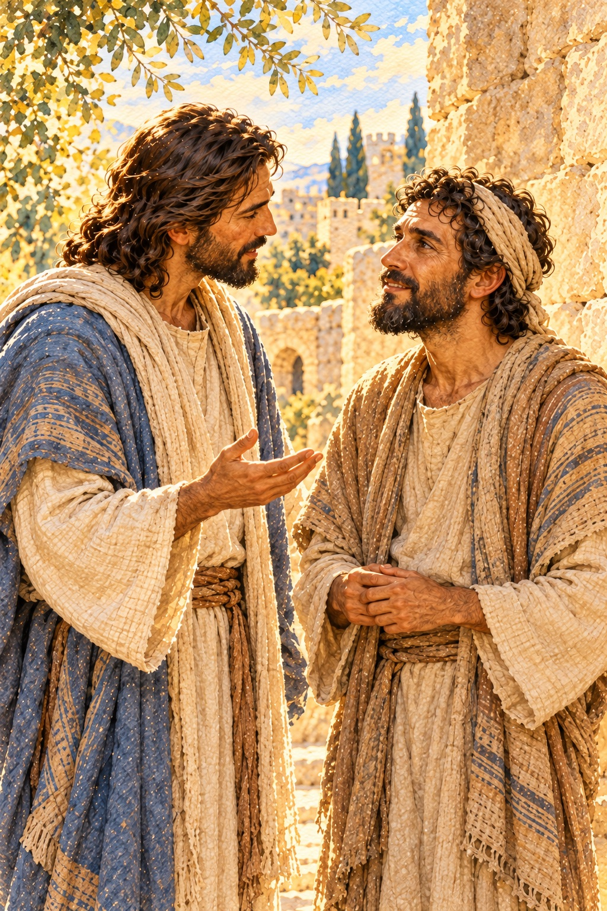

事情越混亂，我們越想趕快得到清楚的答案。
最好禱告一結束，心裡的不安就能平息，眼前的難題也立刻有了方向。我們希望知道接下來會發生什麼，才敢放心邁開步伐。
在教會事工與陪伴人的過程中，我也常有這樣的期盼。面對不熟悉的處境，總希望主先讓我看個明白：這個人真正需要什麼？這件事該怎麼處理？我們投入的時間與心力，會不會開花結果？

這些焦慮與疑問，都可以帶到主面前。
不過，在完整的答案浮現以前，我們往往已經看見一件可以回應的事。也許是靜下心來，聽懂對方的需要；也許是邀請一個人共同討論；也許是承認自己還不了解，需要更多時間與幫助。
有些學習，正是在這樣一邊回應、一邊摸索的過程中，漸漸明朗。
《約翰福音》第九章，記載了一個生來看不見的人，如何遇見耶穌，又如何在隨後的曲折經歷中，逐漸認識祂。
先看見眼前這個人
故事一開始，耶穌看見一個生來瞎眼的人。門徒卻問起，他的失明，究竟是自己犯罪造成的，還是父母犯罪造成的？
他們想知道原因，卻把眼前這個人的處境，放進了追究誰有罪的框架裡。
耶穌沒有把他的失明歸咎於他或他的父母，反而引導門徒留意上帝將在他身上顯明的作為。祂也表明，自己是世上的光。
接著，耶穌吐唾沫在地上，和成泥，抹在那人的眼睛上，吩咐他：
「你往西羅亞池子裡去洗。」
那人去了，洗過之後，回來就能看見。
這段記載，讓我們停下來思想：當一個需要幫助的人站在面前，我們最先看見的是什麼？
是他的痛苦與需要，還是自己急著替他作出的解釋？
有時，聽見一個家庭陷入困境，我們很快就猜想，是不是他們沒有妥善安排生活；看見一位年輕人反覆受挫，也容易認為，是他不夠努力。
然而，在尚未了解以前，這些判斷可能使對方更難開口，也讓我們錯過真正需要聽見的事。
耶穌看見了這個人，也回應了他的需要。我們同樣需要學習，在追問與下結論之前，先留一點時間聆聽，讓對方有機會說出自己的處境。
有時，關心一個人的開始，就是願意承認：關於他的生活，
我還有許多不知道的事。
帶著尚未明白的，回應主
泥土與水池，是這個故事裡令人印象深刻的細節。
耶穌抹了泥，吩咐那人去洗；那人照著吩咐去了，後來得以看見。讀到這裡，我們自然會好奇：走向水池的那段路，他是怎麼走過的？心裡又在想些什麼？
經文沒有描述這些細節，卻清楚記下了他的回應：他聽見耶穌的吩咐，就去了。
我們常希望把一切弄明白，才願意行動。
先確定談話會有好結果，才肯開口；先有把握不被拒絕，才願意釋出善意；先想好怎樣說才不會難堪，才承認自己需要幫助。
可是，許多關係與事情的發展，無法在開始以前，就知道全部的答案。我們可以認真預備，也需要容許自己，在實際接觸之後，繼續學習與調整。
「帶著泥土摸黑出發」，可以成為一個提醒：當我們還未看清全貌，仍可以回應已經明白的帶領。
這份回應，可能只是把答應的小事做好，把不了解的地方問清楚，或把需要協助的部分，誠實說出來。當方向仍有疑問，就繼續禱告，查考聖經，與成熟可信任的同伴一起分辨。
願意承認自己不知道，也能幫助我們走得踏實。
約翰在經文中特別說明，西羅亞的意思是「奉差遣」。這個註解，也讓我們想到前面耶穌所說，要做那差祂來者的工作。
我們的目光，因此從那把泥土，轉向耶穌自己。使那人得以看見的，是主的憐憫與大能；他的行動，則是對主話語的回應。
今天，我們也可以在主面前問：「在這個處境裡，有什麼是我已經明白，可以忠心去做的？」

看見之後，仍有需要面對的事
那人得以看見之後，生活並沒有立刻變得容易。
鄰舍對他的改變感到驚訝，有人甚至懷疑，他是不是原來坐著乞討的那個人。後來，他又面對法利賽人的盤問，反覆被要求說明自己的眼睛是怎麼開的。
他對耶穌的認識仍在發展，也無法回答所有人的問題，但他清楚知道自己經歷了什麼。因此，他說：
「有一件事我知道，從前我是眼瞎的，如今能看見了。」
這句話，有一份樸實而堅定的力量。
他沒有因為自己還有不明白的地方，就否認已經領受的恩典；也沒有為了應付盤問，而假裝知道所有答案。
這提醒我們，信仰中的誠實，也包括分清楚自己知道什麼、還不知道什麼。
有些真理，我們已經確信；有些疑問，仍在尋求。有些恩典，我們確實經歷了；至於未來的路會如何，還需要繼續等候。
這些情況，可以同時存在。
一段關係開始有了對話，不代表累積的誤會已經解開；一項事工終於找到方向，也可能仍有許多工作需要完成。我們可以為眼前的一點進展感謝主，同時認真面對尚未解決的難題。
當人問起我們的信仰，也可以如此分享：哪些幫助是自己領受過的，哪些問題仍需要學習與尋求。
我們不必為了使見證更動人，就把曲折說成一路順利，也不必替每一個結果補上自己無法確知的原因。
帶著仍然有限的理解，誠實說出已經領受的恩典，本身就很寶貴。
在路上，更深認識祂
故事後來，那人在與宗教領袖的爭辯中，被趕了出去。
耶穌聽說這件事，後來遇見他，與他說話，引導他認識上帝的兒子。那人回應相信，也向耶穌敬拜。
回頭看，他對耶穌的認識，是逐漸加深的。起初，他提起那位替自己抹泥、吩咐自己去洗的人；後來，他稱耶穌為先知；最後，他在耶穌面前回應信靠。
這段路，有得以看見的喜悅，也有被質問、被排拒的艱難。
而在他遭受排拒之後，耶穌仍與他相遇。
主的關顧，延伸到了他後來的處境裡。祂回應這個人的身體需要，也引導他更深認識自己所信靠的主。
這使我們想到，在教會與社區陪伴人的時候，也需要留意後續的關懷。
當一個迫切的問題得到處理，對方可能仍有其他難處。有些壓力，
需要熟悉之後才說得出口；有些生活上的調整，也需要時間與支持。多一句問候，多一次傾聽，也許就能讓他知道，這段路上，有人願意同行。
同樣地，當我們自己仍在迷惘中，也可以繼續來到主面前，把已知的感恩與未知的顧慮，都向祂敞開。
我們不必急著為每一段混亂找出完整的屬靈解釋。可以先了解事情的實際情況，尋求合適的幫助，在聖經的教導與群體的扶持中，繼續尋求主的帶領。
今天，也許你心裡仍有許多問號。
把它們帶到主面前，也留意那些已經領受、值得感謝的恩典，想想有什麼是今天已經明白、可以回應的。
就從那裡起步。
帶著尚未明白的疑問，忠心走出今天的一步；也在每一次真誠的回應中，繼續認識那位看見你、關顧你的主。
M+ 實戰操練
反思提問（Connection）
目前，有哪一件事讓你很想立刻得到清楚的答案？在這件事上，你確實知道什麼？又有哪些部分仍需要了解？
你是否因為還無法掌握全局，就忽略了已經領受的幫助，或一直延後自己已經明白應該作出的回應？
當身邊的人陷入困境時，你會先聽他的處境，還是急著替他找出原因與責任？
真理宣告（Transition）
我宣告，耶穌是世上的光，祂看見我的需要，也關顧仍在尋求中的我。
我願意把不明白的帶到祂面前，為已經領受的恩典獻上感謝。我願意誠實面對自己的有限，保持聆聽與察驗的心，在明白之後作出回應。
求主賜我一顆受教的心，使我在真實的生活處境中，更深認識祂，也更用心地看見身邊的人。
今日行動（Action Plan）
為一件讓你感到迷惘的事，寫下三句話：
1. 我現在確實知道的是什麼？
2. 我還需要了解什麼？
3. 我今天可以回應的一步是什麼？
若需要更多資訊或協助，就找一位合適、可信任的人，誠實說明你的處境，一起釐清。
今天也留意一份已經領受的幫助，為它向主感謝；若合適，也向曾經扶持你的人表達謝意。
向主禱告：
「主啊，我還有許多不明白的地方，但謝謝祢看見我，也持續在我的生命裡施恩。求祢引導我，使我能誠實面對已知與未知，忠心回應今天能做的事。願我在前行的過程中，更深、更真實地認識祢。奉耶穌基督的名禱告，阿們。」
